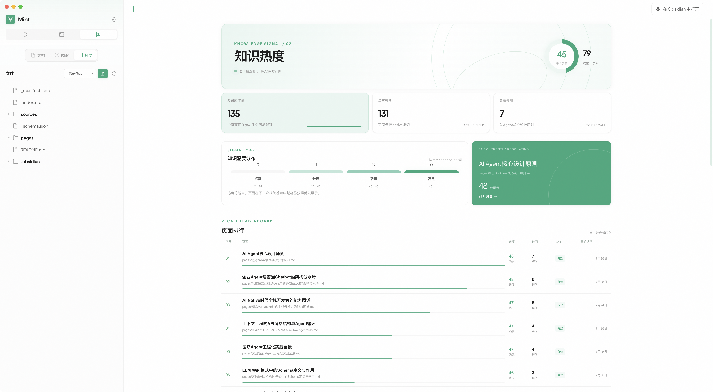
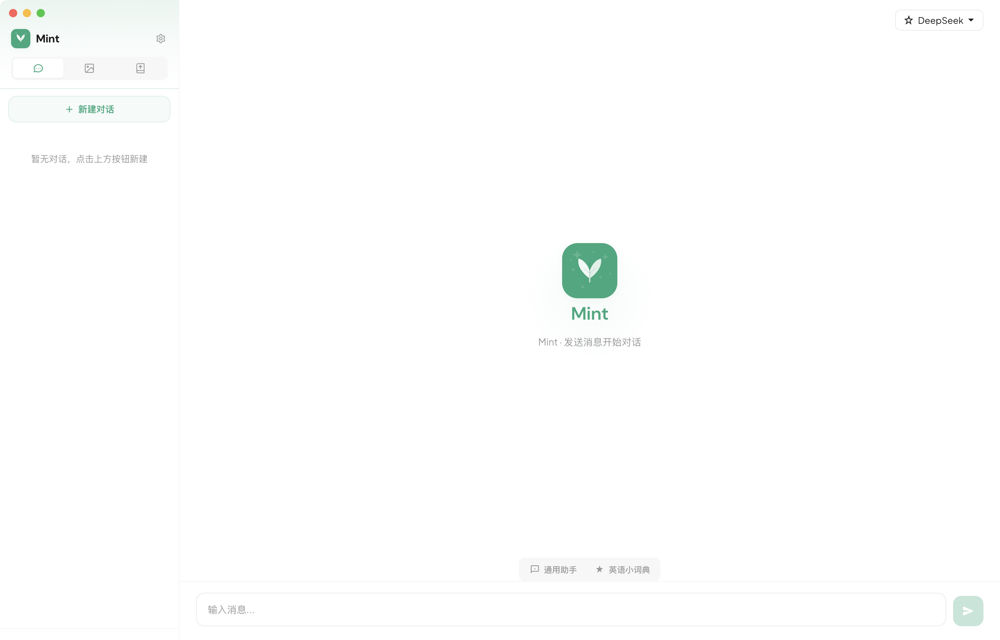
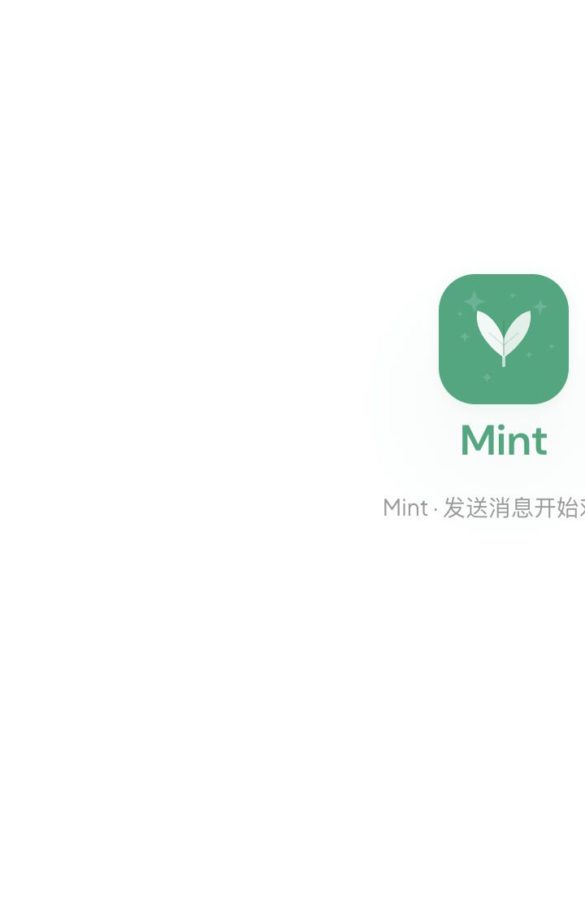
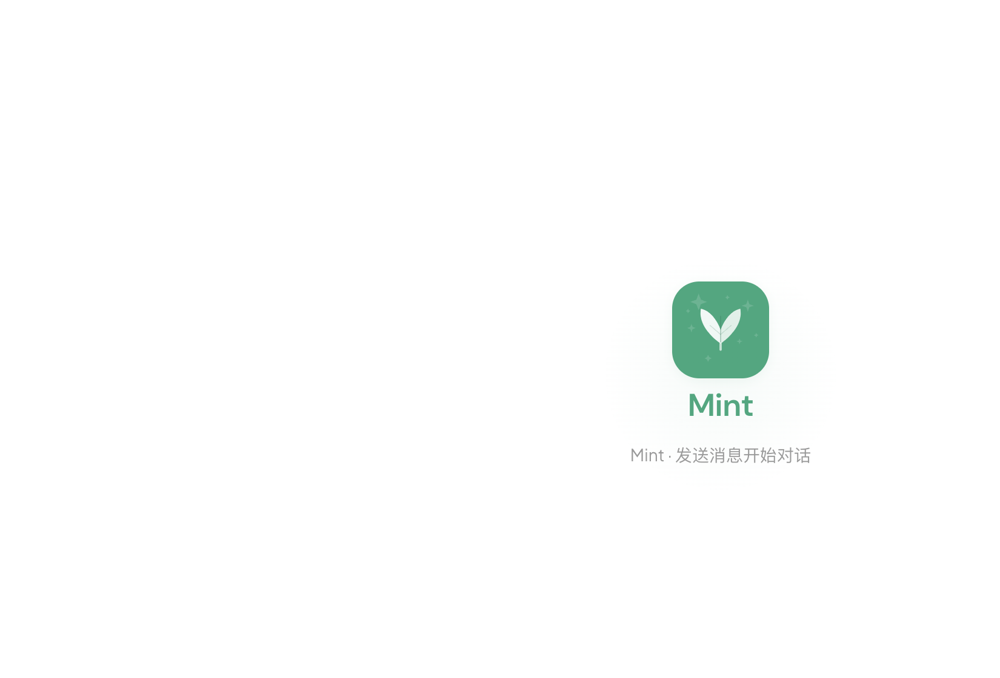

TODAY / 09:41
Make room
for the useful.
Ask Mint anything ↗
TODAY / 09:41
02真实界面
从对话开始，在同一个清爽的工作台里继续前进。这里就是 Mint 的真实界面。




产品架构
不是又一个聊天窗口。Mint 是一个可以积累上下文、连接知识、调用工具的工作空间。它让 AI 从“回答一个问题”，走向“陪你把事情做完”。
03技术架构
知识库负责积累和编译，Chat 负责把它带入工作。
开放构建
Mint 开源、可扩展，也愿意听见你的想法。来看看它如何工作，或者一起让它变得更好。
打开仓库↗